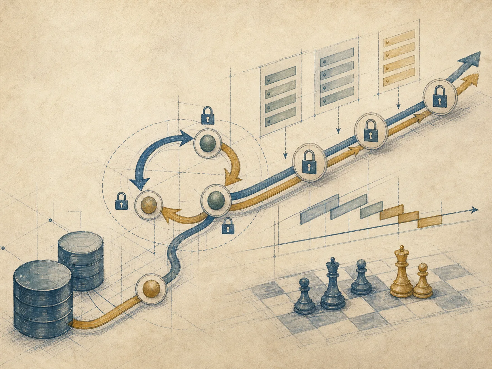
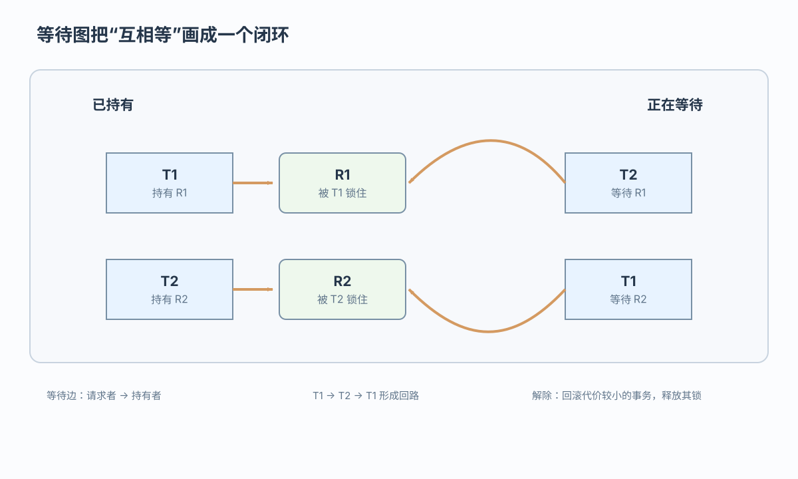
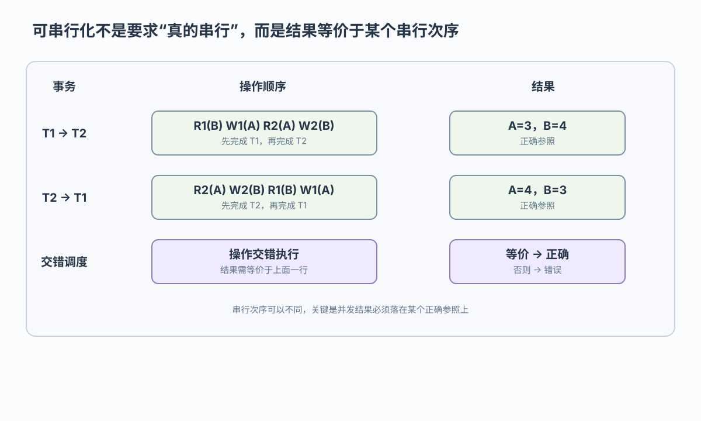

串行参照
T1 先执行或 T2 先执行，都可能是正确参照，结果不一定相同

从等待图和调度结果判断并发控制
 VER. 2608.2
Built with impress.js
VER. 2608.2
Built with impress.js
完成本节后，你应该能够
后来的请求不断插队，先来的请求持续等待
T1 持有当前请求所需的锁
先到达的 T2 进入等待队列
后到达的 T3 获准继续
后到达的 T4 也先于 T2 获准
系统持续推进，T2 却一直得不到锁
活锁表现为某事务持续饥饿而系统仍在推进；先来先服务可减少这种风险，但无环不能单独证明不存在饥饿
每个事务都持有对方需要的锁

等待图形成回路时构成死锁，事务不能靠彼此释放锁而继续
预防会更早限制事务，检测则根据动态请求处理
| 方法 | 做法 | 主要取舍 |
|---|---|---|
| 一次封锁 | 一次申请全部数据 | 防死锁但降低并发且难预知 |
| 顺序封锁 | 按统一顺序申请 | 防回路但维护顺序困难 |
| 超时 | 等待过久即判定 | 简单但可能误判 |
| 等待图 | 检测有向图回路 | 准确但需要周期性检查 |
检测回路 → 选择代价较小的牺牲事务 → 回滚并释放锁 → 其他事务继续；是否重试由系统或应用决定
串行调度只提供结果参照，不要求并发执行真的按串行方式运行

T1 先执行或 T2 先执行，都可能是正确参照，结果不一定相同
交错执行的结果若等价于其中一个串行参照，就是可串行化调度
R1(A) → W1(A) → R2(A) → W2(A) 是串行参照；R1(A) → R2(A) → W1(A) → W2(A) 需要进一步判断
不同事务访问同一数据且至少一方写入时不能随意交换
| 操作对 | 是否冲突 | 原因 |
|---|---|---|
Ri(x) 与 Wj(x) | 是 | 同一数据项、不同事务且一方写入 |
Wi(x) 与 Rj(x) | 是 | 读到的值可能改变 |
Wi(x) 与 Wj(x) | 是 | 最终写入者可能改变 |
Ri(x) 与 Rj(x) | 否 | 都不改变数据 |
判断冲突要检查三个条件：不同事务、同一数据项、至少一方写入；可交换的是不冲突操作
若能交换成某个串行调度，原调度称为冲突可串行化
把每个事务作为一个结点
若 Ti 的冲突操作先于 Tj，画边 Ti → Tj
优先图无环时，用拓扑序得到一个串行次序
有环表示不是冲突可串行化，但不能据此否定其他可串行化可能
冲突可串行化是可串行化的充分条件，也是较容易检查的条件
读写前必须取得相应锁；一旦释放第一个锁，就不能再申请新锁
| 阶段 | 可以做 | 不可以做 |
|---|---|---|
| 扩展阶段 | 申请并获得任何锁 | 释放锁 |
| 收缩阶段 | 释放任何锁 | 申请新锁 |
| 分界点 | 最后一次加锁 | 之后不得再加锁 |
严格 2PL 至少将所有 X 锁保持到 COMMIT／ROLLBACK；它仍属于 2PL，也仍可能死锁
解锁后再次加锁就违反 2PL
| 遵守 2PL | 不遵守 2PL |
|---|---|
SLOCK A → SLOCK B → XLOCK C → UNLOCK B → UNLOCK A → UNLOCK C | SLOCK A → UNLOCK A → SLOCK B → XLOCK C |
| 所有加锁都在第一次解锁之前 | 解锁后又申请新锁 |
正确性和等待终止是两个不同问题
｜ T2: XLOCK B→等待 A`→两者都遵守 2PL 但形成死锁一次封锁法是 2PL 的特例，但一般 2PL 允许事务分阶段取得锁；严格 2PL 只改变 X 锁释放时机，不消除死锁
锁等待可能导致活锁或死锁；调度还要满足正确性条件
等待图中请求者指向持有者；有环表示死锁
优先图中的冲突边无环时，调度才是冲突可串行化
冲突可串行化是可串行化的充分条件
第一次解锁后不得再加锁；严格 2PL 仍可能死锁
等待图诊断死锁，优先图判断冲突可串行化，2PL 保证可串行化但仍可能死锁
R/W 调度，如何构造优先图并用拓扑序判断冲突可串行化？